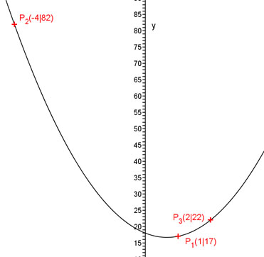

Aufgabe 76 Wie lautet die Funktionsgleichung einer Parabel der Form y = ax2 + bx + c, wenn ihr Graph durch die Punkte P1(1|17), P2(-4|82) und P3(2|22) geht? P1 ergibt: x = 1 und y = 17 Eingesetzt in y = ax2 + bx + c 17 = a * 12 + b * 1 + c a + b + c = 17 (1) P2 ergibt: x = -4 und y = 82 Eingesetzt in y = ax2 + bx + c 82 = a * (-4)2 + b * (-4) + c 16a – 4b + c = 82 (2) P3 ergibt: x = 2 und y = 22 Eingesetzt in y = ax2 + bx + c 22 = a * 22 + b * 2 + c 4a + 2b + c = 22 (3) Lösung des linearen Gleichungssystems mit (1) , (2) und (3): (1) * (-1) + (2) ergibt -a – b – c = -17 16a – 4b + c = 82 -------------------- 15a – 5b = 65 (4) (1) * (-1) + (3) ergibt -a – b – c = -17 4a + 2b + c = 22 -------------------- 3a + b = 5 (5) (5) * (-5) + (4) ergibt: 15a – 5b = -25 15a – 5b = 65 -------------------- -10b = 40 |:(-10) b = - 4 In (5) eingesetzt: 3a – 4 = 5 |+4 3a = 9 |:3 a = 3 In (1) eingesetzt: 3 – 4 + c = 17 -1 + c = 17 |+1 c = 18 Gesuchte Funktion: y = 3x2 - 4x + 18 